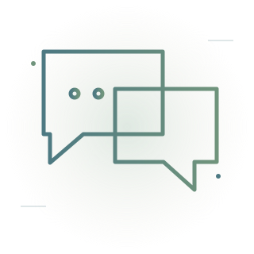

ПСИХОЛОГИЧЕСКОЕ ДАВЛЕНИЕ
Не дай собой манипулировать
Социальная инженерия — попытка заставить человека самому раскрыть сведения или выполнить действие. Мошенники используют страх, спешку, доверие и секретность.

Сценарии, в которых нужна пауза
- «Звонок из банка»: требуют перевести деньги на безопасный счёт. Положи трубку и позвони по официальному номеру.
- «Друг попал в беду»: просит деньги в мессенджере. Перезвони по сохранённому номеру.
- «Аккаунт заблокируют»: предлагают срочно перейти по ссылке. Проверь аккаунт в официальном приложении.
- «Назови код»: якобы поддержка просит код подтверждения. Не сообщай код.
Как проверить собеседника
- Не используй номер или ссылку, которые прислал сам собеседник.
- Свяжись с человеком через уже известный контакт.
- Не принимай финансовые решения под давлением.
- Если тревожно — останови разговор и посоветуйся со взрослым.